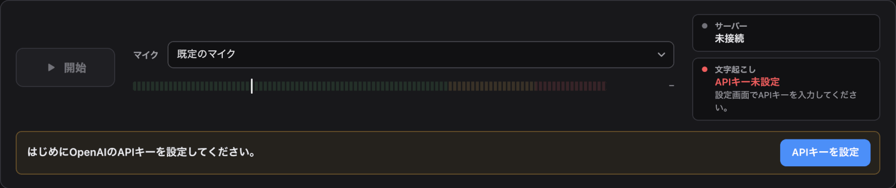
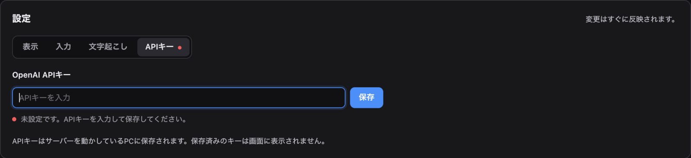
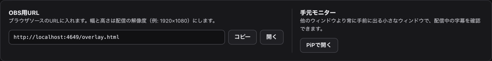
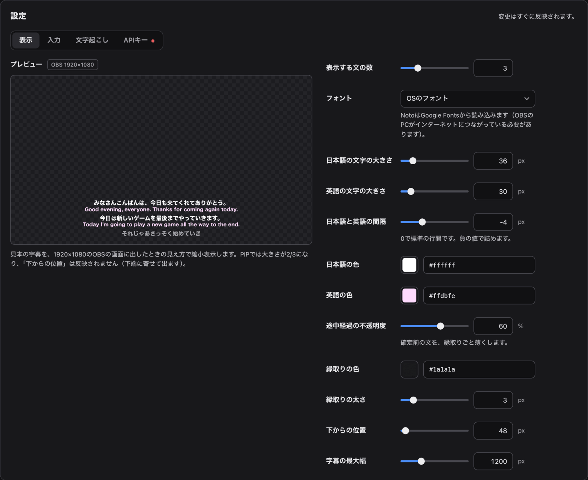
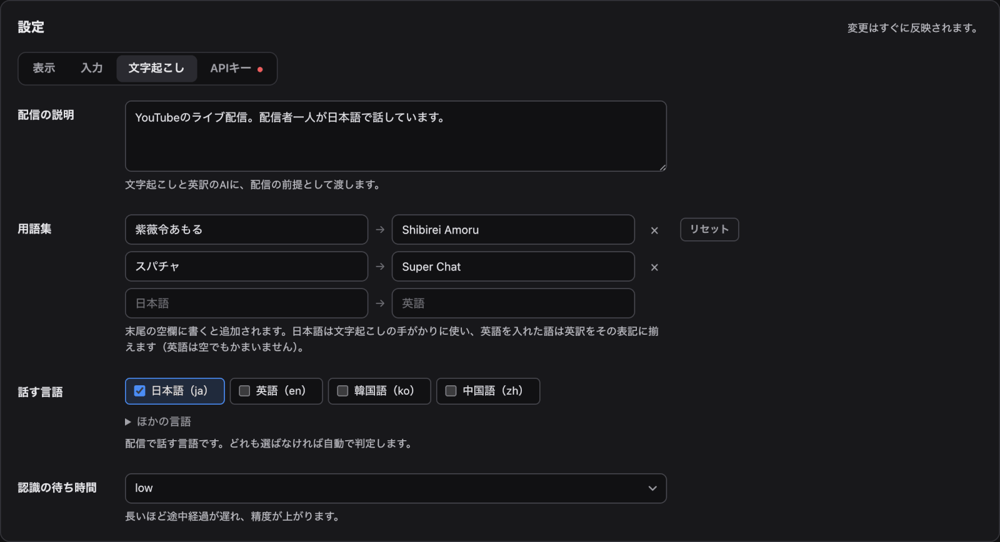
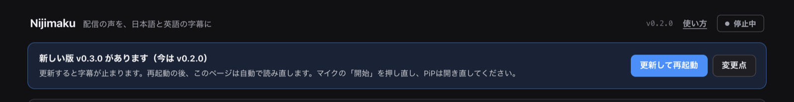
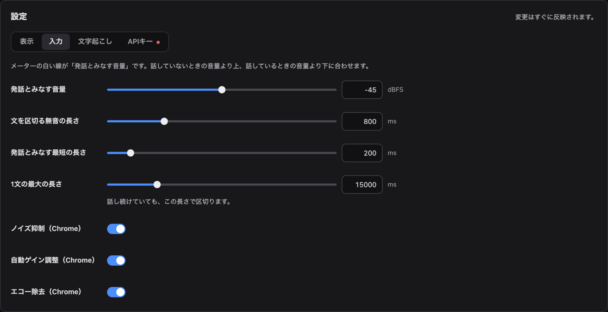

Nijimaku 使い方
Nijimakuの画面（capture.html）の操作と、OBS・PiPに字幕を出す手順。Nijimakuの画面のタブは、配信中ずっと開いておく。Nijimakuの画面へ
APIキーを設定する
はじめて使うときに1回だけ行う。APIキーを設定するまで、「開始」は押せない。
-
Nijimakuの画面の「はじめにOpenAIのAPIキーを設定してください。」の横の「APIキーを設定」を押す。

-
「OpenAI APIキー」にキーを入れて「保存」を押す。表示が「設定済み・接続済み」になれば使える。

キーはNijimakuを動かしているPCに保存され、画面には表示されない。変更・削除は「設定」の「APIキー」で行う。
マイクの音声を送る
Nijimakuの画面（capture.html）で操作する。
- 「マイク」で使うマイクを選び、「開始」を押す（初回はマイクの許可を求められる）。
- メーターに音量が出て、「文字起こし」が「準備完了」になれば（右上の表示が「LIVE」になる）、話すと字幕が出る。メーターの白い線は「発話とみなす音量」で、音量が線を越えると右の数値が緑になる。
このタブは配信中ずっと開いておく。タブを閉じるか「停止」を押すと、音声の送信が止まり、字幕が出なくなる。
OBSに字幕を出す
-
OBSのソースの「＋」から「ブラウザ」を追加し、URLにNijimakuの画面の「OBS用URL」を入れる（「コピー」でコピーできる）。「幅」と「高さ」は既定の800×600から配信の解像度（例: 1920×1080）に変える。字幕は画面の下寄りに出る。

- 「カスタムCSS」は既定のままにする（既定のCSSで背景が透過する）。
- OBSは字幕のページをNijimakuから読み込むので、OBSより先にNijimakuを起動しておく。
- OBSでページを読み直しても（プロパティの「現在のページのキャッシュを更新」）、表示中の字幕はそのまま出る。
- Nijimakuを再起動しても、OBSの字幕は自動で再接続する（OBS側の操作は要らない）。再起動すると表示中の字幕は消える。
- 文字の大きさ・色・位置は、Nijimakuの画面の「設定」の「表示」で変えられ、OBSにすぐ反映される（設定を変える）。
-
カラオケモード: 字幕を1行で右から左へ流し続ける表示。英訳は出ず、確定後に文字が直っても流れている文字は変わらない。切り替え方は2つあり、使いやすい方を選ぶ。
- Nijimakuの画面の「開始」ボタンの下の「カラオケモード（β）」をオンにする。OBSの字幕とPiPがその場で切り替わる。
- 「OBS用URL」の「カラオケ固定」のURLでブラウザソースを別に追加し、歌う場面のシーンに置いてOBS側で切り替える。こちらはスイッチに関係なく常に流れる。
PiPで字幕を見る
「手元モニター」の「PiPで開く」を押すと、字幕だけの小さなウィンドウが開き、常に他のウィンドウの手前に表示される（Chromeのみ）。配信画面とは別に、手元で字幕を確かめたいときに使う。
- ウィンドウは透過せず、位置はドラッグで動かす。
- 文字の大きさ・縁取りの太さ・間隔はOBSの2/3になり、「下からの位置」は反映されない（下端に寄せて出る）。
- Nijimakuの画面のタブを閉じるか読み直すと、PiPも閉じる。
設定を変える
Nijimakuの画面の「設定」で変える。変えた値はすぐ反映され、Nijimakuを再起動しても残る。項目ごとの「リセット」で既定の値に戻る。
- 「表示」: 字幕の文字の大きさ・色・縁取り・位置・フォントや、表示する文の数、カラオケモードで流れる速さ。プレビューで、1920×1080のOBSの画面に出したときの見え方を確かめられる（カラオケモードはプレビューに出ない）。
- 「入力」: 発話とみなす音量や、文を区切るまでの時間（無音・句点・強制）。ノイズ抑制・自動ゲイン調整・エコー除去の切り替え。
- 「文字起こし」: 配信の説明・用語集・話す言語・認識の待ち時間。
- 「APIキー」: APIキーの変更・削除。
- 「バックアップ」: 設定をファイルに書き出す・読み込んで戻す。APIキーは含まれない。読み込むと、今の設定はファイルの内容に置き換わる。

用語集と配信の説明
人名や作品名など、正しく文字起こししてほしい語や、英訳の表記を決めたい語は「用語集」に入れる。
- 1語ごとに日本語と英語の欄に入れる（例: 「紫薇令あもる」と「Shibirei Amoru」）。末尾の空欄に書くと追加される。
- 日本語は文字起こしの手がかりに使い、英語を入れた語は英訳をその表記に揃える。英語は空でもよい。
- 「配信の説明」には配信の内容を書く（既定は「YouTubeのライブ配信。配信者一人が日本語で話しています。」）。文字起こしと英訳のAIに、配信の前提として渡す。

新しい版に更新する
Nijimakuは起動するたびに1回、GitHubのReleasesで新しい版を確かめる（Windowsの配布版だけ）。確かめられなかったときは「新しい版を確認できませんでした」と出るが、字幕はそのまま使える。
新しい版があると、ヘッダーの下に「新しい版 v0.3.0 があります（今は v0.2.0）」のように出る。「変更点」を押すと、その版のGitHubのReleaseのページが開く。今の版はヘッダーに出る。

更新の手順
- 「更新して再起動」を押す。再起動の後に「開始」を押し直すまで字幕が止まるので、配信中に押すときは注意する。
- 「ダウンロードしています…」→「再起動しています…」と出る。新しい版をダウンロードし、壊れていないか確かめてから自動で再起動する。ファイルのコピーなどの手作業は要らない。必要なら、Node.jsも自動で新しくする。
- 再起動の後、Nijimakuの画面は自動で読み直す。マイクの「開始」を押し直す。
- PiPを使っていたら、「PiPで開く」で開き直す（Nijimakuの画面を読み直すとPiPのウィンドウは閉じる。ChromeのDocument Picture-in-Pictureの仕様）。
- OBSのブラウザソース（字幕のページ）は、自動で新しい版を読み直す。OBS側の操作は要らない。
- APIキー・設定・ログは、更新しても残る。
更新がうまくいかないとき
- 「更新できませんでした: <理由>」と出たとき: 今の版はそのまま使える。「更新して再起動」をもう一度押すと、やり直せる。
- 「v0.3.0 の起動に失敗したため、v0.2.0 に戻しました」のように出たとき: 新しい版が起動に失敗したので、自動で前の版に戻して起動し直している。前の版のまま使える。
- 「…には新しい起動役が要ります。Releaseのページから全部入りZIPをダウンロードし、今のフォルダに上書き展開してください」と出たとき: READMEの「Windowsの配布版（ZIP）」の「更新」の手順で、全部入りZIP（
nijimaku-<版>-win-x64.zip）を上書き展開する。
前の版に戻すボタンは無い。戻したいときは、READMEの同じ手順で前の版の全部入りZIPを上書き展開する。
うまくいかないとき
起動するときの問題（Nijimakuの画面が開かない等）は、READMEの「Windowsの配布版（ZIP）」の「うまくいかないとき」を見る。
「開始」を押せない
APIキーが未設定。APIキーを設定するの手順で設定する。
字幕が出ない
- 「サーバー」が「接続済み」、「文字起こし」が「準備完了」になっているか確かめる。「接続できません」のときは、その下に理由が出る。
-
話しても音量がメーターの白い線（発話とみなす音量）を越えないと、字幕は出ない。「マイク」で選んだマイクが合っているか確かめる。白い線は「設定」の「入力」の「発話とみなす音量」で変えられる。

- 「マイクが切断されました。」と出たら、マイクをつなぎ直して「開始」を押す。
更新に失敗した
新しい版に更新するの「更新がうまくいかないとき」を見る。
黒いウィンドウを閉じた
Windowsの配布版では、黒いウィンドウを閉じるとNijimakuが止まり、字幕が出なくなる。配信中は閉じない。止めてしまったら、start.cmdで起動し直す。